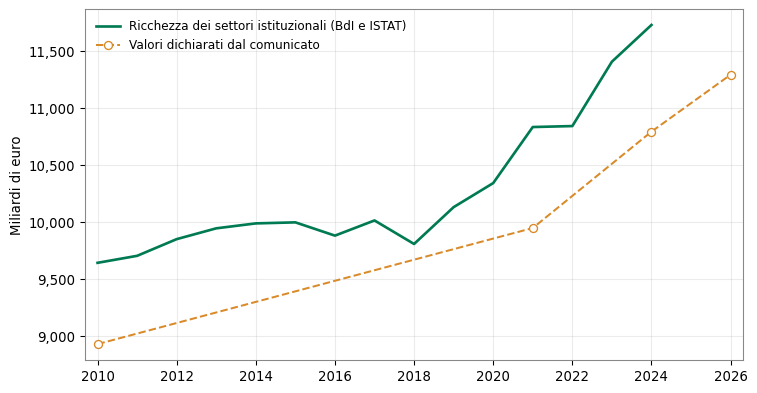
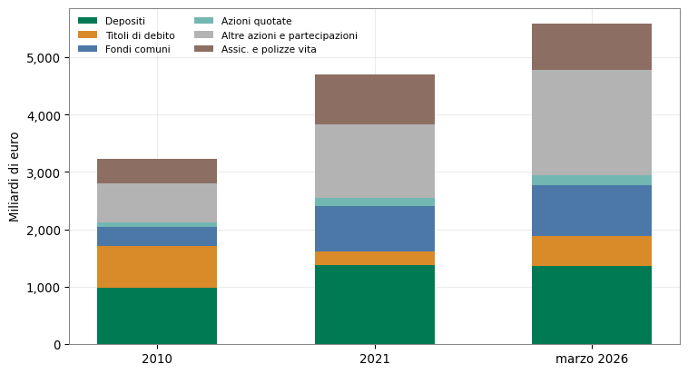

La ricchezza delle famiglie italiane e la lettura di Unimpresa
Verifica del comunicato «patrimonio 2026» sui dati della Banca d’Italia
Paolo Volterra ![]()
Il Centro studi di Unimpresa ha diffuso una ricostruzione dell’evoluzione del patrimonio delle famiglie italiane dal 2010 a marzo 2026, con la tesi che dal 2022 sia stata accumulata più ricchezza netta che negli undici anni precedenti. Questo documento confronta quelle cifre con le fonti statistiche ufficiali. Le componenti finanziarie del comunicato — depositi, titoli, fondi comuni, azioni quotate, riserve assicurative, debiti — coincidono con i conti finanziari del settore famiglie fino al primo trimestre 2026. Il livello della ricchezza netta e lorda del comunicato è invece inferiore di circa l’8-9 per cento a quello della pubblicazione della Banca d’Italia e dell’ISTAT sulla ricchezza dei settori istituzionali, e la voce «partecipazioni nelle aziende» non trova riscontro nei conti finanziari. Sui dati ufficiali della ricchezza netta la ripartizione dell’incremento tra i due periodi si colloca intorno a 57 e 43 per cento, in ordine inverso rispetto al comunicato; sulla sola componente finanziaria la prima fase pesa ancora di più. La ricomposizione del portafoglio descritta dal comunicato — ritorno dei titoli di debito, recupero degli immobili, arresto della corsa ai depositi — è invece confermata dalle fonti.
ricchezza delle famiglie, conti finanziari, risparmio, Banca d’Italia, Unimpresa
1 Il quesito
Il Centro studi di Unimpresa ha pubblicato una ricostruzione dell’evoluzione del patrimonio delle famiglie italiane dal 2010 a marzo 2026 [1]. La tesi centrale è che in poco più di quattro anni, dall’inizio del 2022, le famiglie abbiano accumulato più ricchezza netta — circa 1.347 miliardi di euro — di quanta ne avessero accumulata negli undici anni fra il 2010 e il 2021, quando l’incremento era stato di circa 1.020 miliardi. Il comunicato dichiara di rielaborare dati statistici della Banca d’Italia.
Questo documento verifica quelle cifre confrontandole con le due statistiche ufficiali che misurano la ricchezza delle famiglie: la pubblicazione della Banca d’Italia e dell’ISTAT sulla ricchezza dei settori istituzionali [2], che comprende sia le attività reali sia quelle finanziarie, e i conti finanziari trimestrali della Banca d’Italia [3], che coprono la sola componente finanziaria e arrivano al primo trimestre 2026. Per la parte finanziaria si utilizzano le serie del settore famiglie diffuse nell’ambito dei conti nazionali per settore istituzionale [4].
2 La ricchezza delle famiglie nelle statistiche ufficiali
La ricchezza netta delle famiglie è la somma delle attività reali — in larghissima parte abitazioni — e delle attività finanziarie, al netto delle passività, cioè dei debiti. A fine 2024, ultimo anno coperto dalla pubblicazione sulla ricchezza dei settori istituzionali, il settore famiglie deteneva attività reali per circa 6.760 miliardi di euro, di cui 5.660 miliardi in abitazioni, e attività finanziarie per circa 6.010 miliardi, a fronte di passività per 1.040 miliardi. La ricchezza netta risultante è di circa 11.730 miliardi.
| Attività reali | Attività finanziarie | Passività | Ricchezza lorda | Ricchezza netta | Ricchezza netta — comunicato | |
|---|---|---|---|---|---|---|
| Anno | ||||||
| 2010 | 6756 | 3795 | 908 | 10550 | 9642 | 8928 |
| 2015 | 6483 | 4416 | 902 | 10900 | 9997 | <NA> |
| 2021 | 6385 | 5456 | 1006 | 11841 | 10835 | 9948 |
| 2024 | 6761 | 6013 | 1042 | 12774 | 11732 | 10794 |
Il livello della ricchezza netta indicato dal comunicato è sistematicamente più basso. Per il 2021 il comunicato indica 9.948 miliardi, contro 10.835 miliardi della pubblicazione ufficiale; per il 2024 indica 10.795 miliardi, contro 11.732. Lo scarto è di circa 900 miliardi in ciascun anno, pari all’8 per cento circa. Uno scostamento analogo, dell’ordine del 9 per cento, riguarda la ricchezza lorda. Le revisioni successive della pubblicazione ufficiale, compresa quella generale dei conti nazionali del 2024, non hanno mai portato la ricchezza netta del 2021 sotto i 10.400 miliardi: nessuna versione della statistica ufficiale coincide con il valore del comunicato.

3 Le componenti finanziarie coincidono con i conti finanziari
Il quadro cambia quando si guardano le singole componenti finanziarie. I valori che il comunicato attribuisce a depositi, titoli di debito, fondi comuni, azioni quotate, riserve assicurative e polizze vita, e debiti, coincidono con i conti finanziari del settore famiglie. La coincidenza è al primo decimale per ciascun anno della serie e si estende al primo trimestre 2026.
| Comunicato | Conti finanziari | Differenza | |
|---|---|---|---|
| Depositi | 1383.4 | 1383.4 | 0.0 |
| Titoli di debito | 229.0 | 229.0 | 0.0 |
| Fondi comuni | 793.5 | 793.5 | -0.0 |
| Azioni quotate | 143.9 | 143.9 | 0.0 |
| Altre azioni e partecipazioni | 1264.3 | 1284.8 | -20.5 |
| Assicurazioni e polizze vita | 858.1 | 858.1 | -0.0 |
| Debiti | 768.8 | 768.8 | -0.0 |
L’unico accostamento non immediato riguarda i depositi. Il comunicato indica per il 2021 un valore di 1.383 miliardi, che corrisponde ai depositi bancari e postali delle famiglie al netto del circolante, cioè delle banconote e monete detenute, stimate in circa 200 miliardi. La voce «altre azioni e partecipazioni» del comunicato coincide invece, a meno dell’uno-due per cento, con la somma delle azioni non quotate e delle altre partecipazioni dei conti finanziari.
La conclusione è che, per il lato finanziario, il comunicato poggia su una fonte pubblica e verificabile. Le sei voci che si agganciano ai conti finanziari rappresentano la parte quantitativamente prevalente del portafoglio finanziario delle famiglie.
4 Le voci che non trovano riscontro
Due elementi del comunicato non si ricostruiscono dalle fonti.
Il primo è la voce «partecipazioni nelle aziende», indicata in circa 1.050 miliardi nel 2010, in calo a 917 miliardi nel 2021 e a 935 nel 2024. Nessuna serie dei conti finanziari del settore famiglie ha questo profilo: le azioni quotate, le azioni non quotate e le altre partecipazioni sono tutte in crescita nel periodo. Sommata alle altre voci finanziarie del comunicato, questa componente porta il totale delle attività finanziarie circa 200 miliardi sopra l’aggregato ufficiale del settore famiglie. Il profilo decrescente e l’ordine di grandezza sono vicini a quelli delle attività reali del settore famiglie diverse dalle abitazioni — immobili non residenziali, impianti, scorte, terreni delle imprese individuali — che valgono circa 1.190 miliardi nel 2010 e 1.070 nel 2021, ma la corrispondenza non è esatta.
Il secondo è la componente immobiliare. Il comunicato indica per gli immobili circa 5.127 miliardi nel 2021, contro i 5.318 miliardi che la pubblicazione ufficiale attribuisce alle abitazioni; lo scarto è del 3-4 per cento e si mantiene per tutti gli anni. I valori per il 2025 e per marzo 2026 non hanno un riscontro ufficiale: la pubblicazione sulla ricchezza dei settori istituzionali si ferma al 2024 e non ha frequenza trimestrale, quindi la parte finale della serie immobiliare del comunicato è una stima.
5 La tesi dell’accelerazione dal 2022
Il comunicato quantifica in 43 e 57 per cento le quote dell’incremento complessivo della ricchezza netta maturate rispettivamente fino al 2021 e dal 2022 in avanti.
| Prima fase | Seconda fase | Quota prima fase (%) | Quota seconda fase (%) | |
|---|---|---|---|---|
| Fonte e periodi | ||||
| Comunicato (2010–2021 vs 2021–mar 2026) | 1019.8 | 1347.0 | 43.1 | 56.9 |
| Ricchezza dei settori istituzionali (2010–2021 vs 2021–2024) | 1193.0 | 896.8 | 57.1 | 42.9 |
| Ricchezza finanziaria netta (2010–2021 vs 2021–mar 2026) | 1544.8 | 890.4 | 63.4 | 36.6 |
Sui dati ufficiali della ricchezza netta la ripartizione si rovescia: confrontando l’incremento del periodo 2010-2021 con quello del periodo 2021-2024, la prima fase pesa per circa il 57 per cento e la seconda per il 43. La differenza rispetto al comunicato dipende in parte dalle revisioni statistiche, che hanno alzato il livello della ricchezza di inizio periodo, e in parte dal fatto che la pubblicazione ufficiale non copre ancora il 2025 e il 2026.
Sulla sola ricchezza finanziaria netta, che i conti finanziari misurano fino a marzo 2026, la prima fase pesa ancora di più, per circa i due terzi dell’incremento complessivo. L’affermazione secondo cui dal 2022 sarebbe stato accumulato più patrimonio che nell’intero periodo precedente si regge quindi sulla rivalutazione degli immobili stimata per il 2022-2026 e sulla voce «partecipazioni nelle aziende», non sulla dinamica delle attività finanziarie.
6 La ricomposizione del portafoglio
La parte del comunicato che le fonti confermano con nettezza è la descrizione di come è cambiata la composizione della ricchezza finanziaria.

Tra il 2010 e il 2021 i titoli di debito detenuti dalle famiglie erano scesi da circa 724 a 229 miliardi, una contrazione di quasi il 70 per cento, mentre erano cresciuti i depositi, i fondi comuni e le riserve assicurative. Dal 2022 la direzione si inverte: i titoli di debito risalgono oltre 525 miliardi a marzo 2026, un più che raddoppio rispetto al minimo, sostenuti dai rendimenti tornati positivi; i depositi si stabilizzano e a marzo 2026 sono lievemente sotto il livello di fine 2021; le riserve assicurative arretrano dopo il 2022 e recuperano solo in parte. È il passaggio da una fase segnata dall’accumulo di liquidità e di risparmio gestito a una fase in cui tornano il reddito fisso e la valorizzazione delle attività, sia reali sia partecipative. Questa lettura, che è il contenuto analitico del comunicato, trova riscontro nei conti finanziari.
7 Conclusioni
Il comunicato di Unimpresa combina due materiali di natura diversa. Le componenti finanziarie della ricchezza delle famiglie sono riprese dai conti finanziari della Banca d’Italia senza alterazioni e sono quindi verificabili; la descrizione della ricomposizione del portafoglio dal 2010 a oggi è coerente con quelle serie. I livelli aggregati della ricchezza lorda e netta sono invece inferiori di circa l’8-9 per cento a quelli della pubblicazione ufficiale sulla ricchezza dei settori istituzionali, per effetto di una misura più contenuta degli immobili e di una voce «partecipazioni nelle aziende» che non trova corrispondenza nelle statistiche. La tesi dell’accelerazione dal 2022 non è confermata dai dati sulla ricchezza netta ufficiale, dove la ripartizione dell’incremento tra i due periodi è di circa 57 e 43 per cento, né dalla sola ricchezza finanziaria netta, dove la prima fase pesa per i due terzi.
Il commento che accompagna il comunicato — la funzione stabilizzatrice del risparmio privato e l’opportunità di orientarne una quota maggiore verso gli investimenti produttivi e le piccole e medie imprese — è una valutazione dell’organizzazione che lo pubblica, distinta dai dati e da leggere come tale.
Nota metodologica
Questo documento nasce dall’interazione di tre componenti. L’autore definisce le domande, esercita il giudizio critico e assume la responsabilità scientifica ed editoriale del risultato. Strumenti di intelligenza artificiale generativa sono impiegati a supporto della ricerca bibliografica, della lettura, della sintesi, della riorganizzazione argomentativa e della revisione del testo. Un’infrastruttura open source sviluppata dall’autore automatizza il reperimento, l’armonizzazione e il controllo dei dati dalle fonti statistiche ufficiali, e mantiene l’elaborazione documentata e riproducibile.
Le fonti sono pubblicamente accessibili e citate con la loro denominazione ufficiale; l’analisi è pertanto integralmente auditabile e replicabile da terzi a partire da esse. Le tabelle e i grafici sono elaborazioni dell’autore: calcoli, aggregazioni, trasformazioni e scelte di rappresentazione sono attribuibili all’autore e non agli enti produttori dei dati.
La responsabilità per le fonti utilizzate, le analisi condotte, le elaborazioni effettuate, le interpretazioni proposte e le conclusioni formulate resta interamente in capo all’autore. L’intelligenza artificiale è stata impiegata come ambiente di supporto cognitivo ed editoriale, non come fonte primaria, autore autonomo o sostituto del giudizio critico.
7.1 Riferimenti
[1]
Centro studi Unimpresa, «Ricchezza delle famiglie italiane: patrimonio 2026». Comunicato stampa, settembre 2026. Disponibile su: https://www.unimpresa.it/ricchezza-famiglie-italiane-patrimonio-2026/74837
[2]
Banca d’Italia e ISTAT, «La ricchezza dei settori istituzionali in Italia (2005–2024)». Statistiche, gennaio 2026. Disponibile su: https://www.bancaditalia.it/pubblicazioni/ricchezza-settori-istituzionali/
[3]
Banca d’Italia, «Conti finanziari — 1o trimestre 2026». Statistiche, luglio 2026. Disponibile su: https://www.bancaditalia.it/pubblicazioni/conti-finanziari/
[4]
Eurostat, «Financial balance sheets — annual and quarterly sector accounts». Eurostat, statistiche dei conti nazionali per settore istituzionale, 2026. Disponibile su: https://ec.europa.eu/eurostat/web/sector-accounts/database